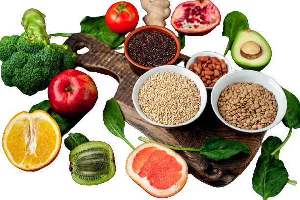

Prós e Contras da Dieta Cetogênica
Prós:
- Pode ajudar na perda de peso
- Estabiliza os níveis de açúcar no sangue
- Pode melhorar a saúde cardiovascular
Contras:
- Restringe a ingestão de carboidratos
- Pode causar cetoacidose em pessoas com certas condições médicas
- Requer monitoramento constante

Receitas Cetogênicas
Escolha uma receita no menu abaixo: